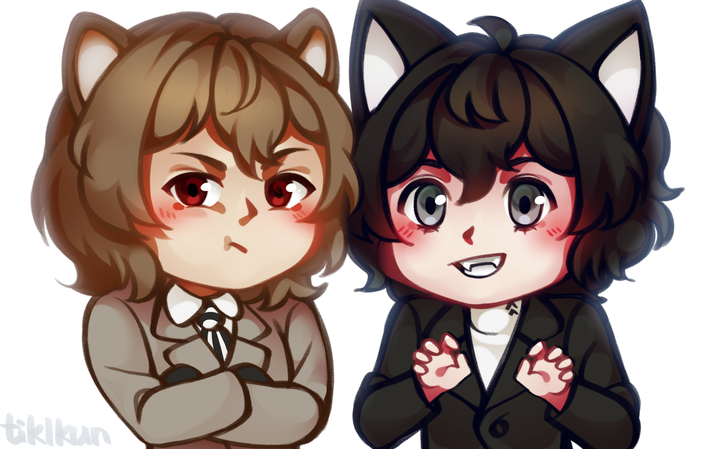

About me
I'm a 19 year old russian digital artist. Currently I'm studying in RTU MIREA to become a software engineer. I aspire to make videogames that people all around the world play in the future.
I am drawing fanart digitally for almost 10 years now. I started in 2013 by drawing characters from my favorite childhood game Sonic the Hedgehog. I use Clip Studio Paint Pro and a Parblo drawing tablet for my work.
My strongest suit is anime style illustrations.